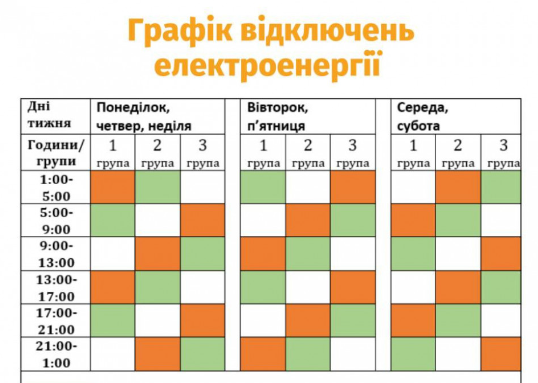
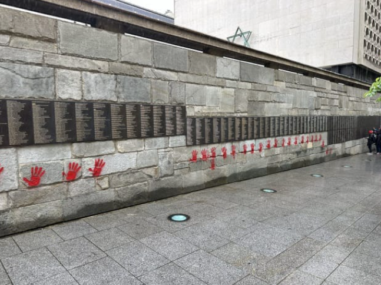

По всій Україні 16 травня діятимуть погодинні відключення світла – "Укренерго"

"Укренерго" запровадив графіки погодинних відключень впродовж доби 16 травня по всій Україні для побутових та промислових споживачів.
Про це повідомляє пресслужба "Укренерго".
"З 00:00 та впродовж доби 16 травня по всій Україні для побутових та промислових споживачів будуть діяти планові обмеження - графіки погодинних відключень (ГПВ)", – йдеться в повідомленні.
В "Укренерго" пояснюють, що це допоможе зробити контрольовані відключення більш передбачуваними для споживачів, а роботу енергосистеми більш безпечною.
Зазначається, що диспетчерський центр "Укренерго" вже довів до обленерго ліміти споживання для кожного регіону.
Отримати інформацію про те, як саме будуть діяти обмеження споживання у вашому регіоні, можна буде в кабінеті споживача, на офіційних сайтах обленерго, а також на їхніх сторінках у соцмережах.
Додається, що причиною обмежень є збільшення споживання електроенергії під час похолодання. Відповідно потужностей українських електростанцій недостатньо через наслідки п’яти ракетно-дронових атак, здійснених РФ по українській енергосистемі з 22 березня.
У Парижі сплюндрували меморіал на честь людей, які рятували євреїв під час Другої світової війни

У Парижі вандали сплюндрували меморіал на честь людей, які рятували євреїв у Франції під час нацистської окупації країни у Другій світовій війні.
Про це повідомляє "Європейська правда" з посиланням на AP.
Як зазначено, меморіал невідомі обмалювали зображеннями червоних слідів від рук.
Мер Парижа Анн Ідальго заявила, що меморіал був сплюндрований в ніч з понеділка на вівторок. Вона повідомила, що подала скаргу до прокурора Парижа.
"Жодна причина не може виправдати таку наругу, яка паплюжить пам'ять жертв Голокосту і праведників, які рятували євреїв, ризикуючи своїм життям", – підкреслила Ідальго.
На стіні викарбувані імена понад 3900 осіб, які ризикували своїм життям заради порятунку євреїв у Франції.
Президент Франції Емманюель Макрон засудив акт вандалізму.
"Паплюження Стіни праведників народів світу… є наругою над пам'яттю цих героїв і жертв катастрофи. Республіка, як завжди, залишиться непохитною перед обличчям одіозного антисемітизму", – зазначив Макрон.
На початку травня стало відомо, що з моменту нападу терористів ХАМАС на Ізраїль до кінця 2023 року у Швеції зареєстрували понад 100 злочинів на ґрунті антисемітської ненависті – що в п'ять разів більше, ніж за той самий період роком раніше.
Ще в листопаді 2023 року Європейська комісія заявила, що європейські євреї знову живуть у страху на тлі сплеску антисемітських інцидентів по всій Європі за кілька тижнів, що минули після нападу ХАМАС на Ізраїль 7 жовтня.